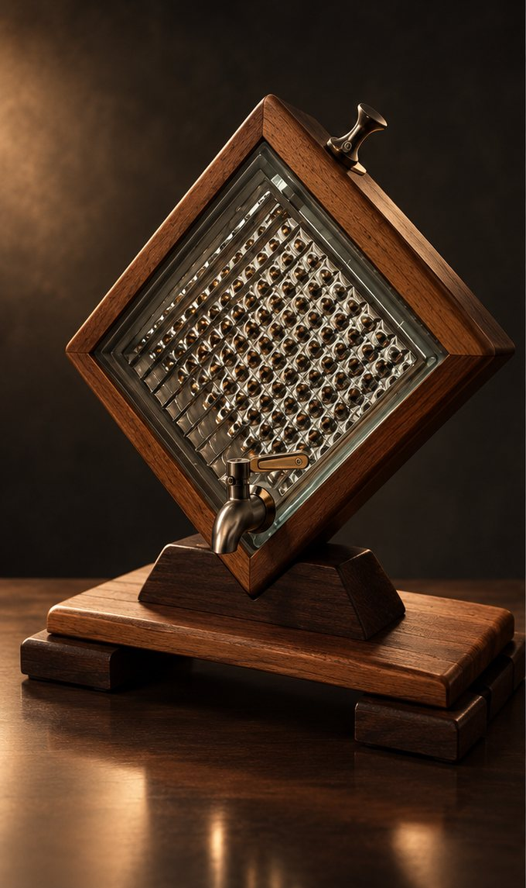

Woodstock Classic
9.000 RSD
Tradicionalni izgled sa slavinom na ručicu i čepom za punjenje na vrhu rama. Za rakiju, viski i konjak.
- Zapremina
- 1,7 litara
- Dimenzije
- približno 35 × 35 cm
- Drvo
- Parena bukva
- Boja
- Prirodna bukva, mahagoni ili orah
- Slavina
- Nerđajući čelik, sa ručicom
- Postolje
- Dvostruko, masivno drvo
- Punjenje
- Čep na vrhu rama